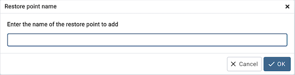

Add Named Restore Point Dialog¶
Use the Add named restore point dialog to take a named snapshot of the state of the server for use in a recovery file. To create a named restore point, the server’s postgresql.conf file must specify a wal_level value of replica, logical, or minimal. You must be a database superuser to create a restore point.
When the Restore point name window launches, use the field Enter the name of the restore point to add to provide a descriptive name for the restore point.
For more information about using a restore point as a recovery target, please see the PostgreSQL documentation.
Click the OK button to save the restore point.
Click the Cancel button to exit without saving work.